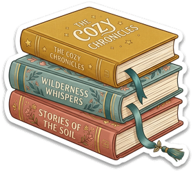
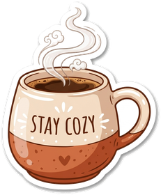
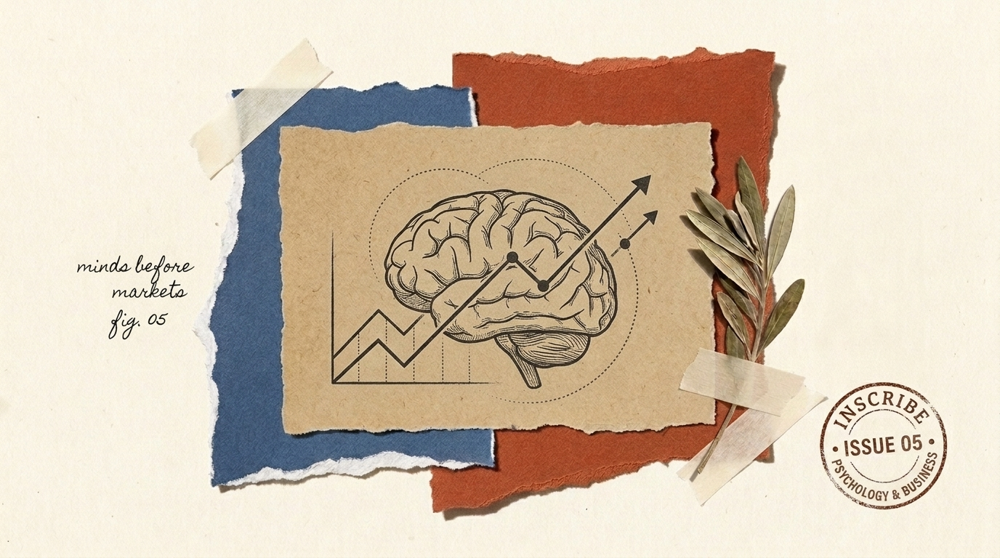
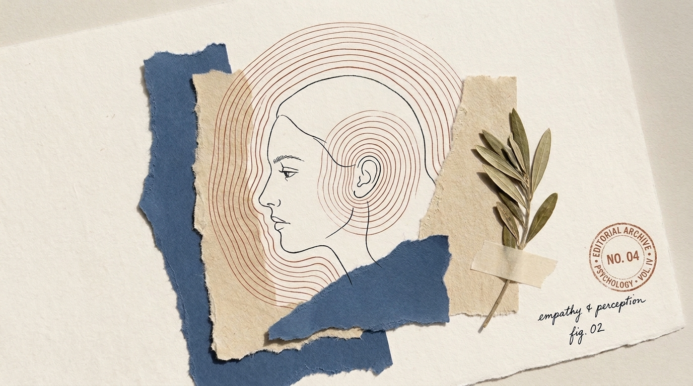
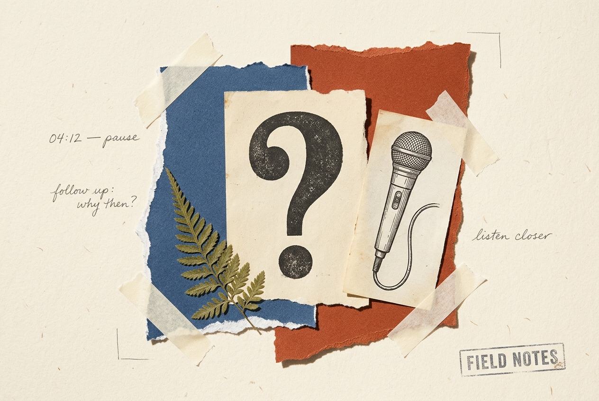
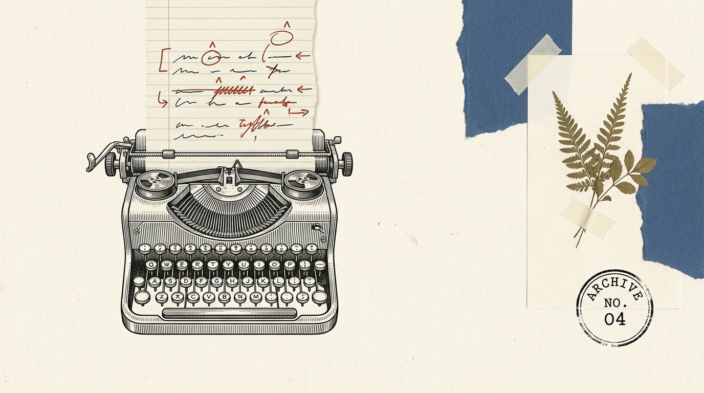
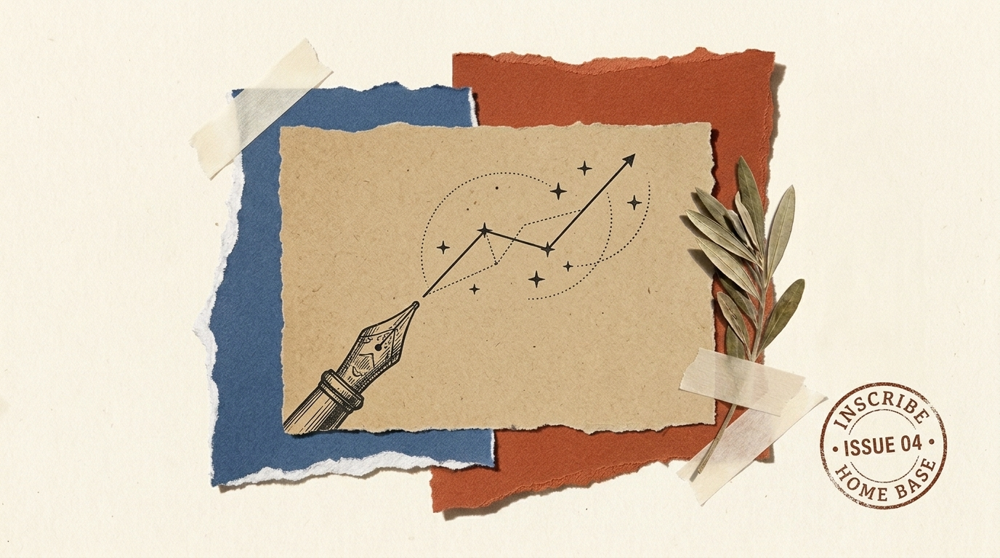

WORDS
THAT WORK.01 / EDITORIAL
THAT WORK.01 / EDITORIAL
Content & storytelling
Articles, editorial writing, research-led storytelling and audience-friendly content.
I'm Diya — a content and research enthusiast with a psychology lens, a storyteller's curiosity and a passion for meaningful communication.





✦ Tip: drag the stickersGrounded in psychology. Driven by storytelling. Interested in the details that make communication connect.
My background in Psychology helps me approach people, audiences and ideas with curiosity. From writing and on-ground interviews to promotional campaigns, event coordination and admission counselling, I enjoy work that brings together creativity, clarity and connection.
“Good communication starts before the first word — it starts with understanding people.”— Diya Das
Click any tear-sheet below to open the full editorial breakdown: brief, psychology insight, and execution.
Articles, editorial writing, research-led storytelling and audience-friendly content.
On-ground conversations with celebrity guests, professors and students, shaped into useful insights and stories.
Social media concepts, campaign messaging, brochures, promotional scripts and creative communication.
Event coordination, team collaboration, student guidance and admission-focused communication.
A cross-functional mix of communication, creative execution and people-facing work.
Created and contributed to 50+ published articles, combining research, clear writing and editorial storytelling.
Conducted 50+ on-ground interviews with celebrity guests, professors and students, building confidence in listening and asking thoughtful questions.
Developed social content ideas, promotional scripts, brochure messaging and campaign concepts, including work in the drone and education space.
People-focused student communication, explaining opportunities, understanding needs and supporting admission conversations.
Experience supporting event planning, coordination, teamwork and communication across different stakeholders.
An academic foundation that strengthens my interest in human behaviour, motivation, perception and audience understanding.
Click any skill pill to see how it translates into real-world work.
Undergraduate studies · Psychology
A space for the questions I keep returning to — about people, stories, creativity and the small details that shape how we connect.
Have you ever noticed that you have opened Instagram for five minutes and somehow, it’s been over an hour. Suddenly then one reel makes you stop scrolling. So why that video, and not the twenty before it have you ever thought of it?

An MBA teaches you how to make business decisions, but psychology teaches you to question the mind making those decisions. Why understanding cognitive bias and human motivation is a genuine corporate superpower.

A look at how listening closely, noticing behaviour and showing empathy can turn everyday communication into something more honest, effective and human.

How a more curious, open and thoughtful question can lead to richer conversations, sharper insights and more honest stories.

A personal take on the messy, exciting process of turning ideas, notes and scattered thoughts into a story that feels real and worth reading.

What happens when a client Googles your name? Why owning your independent digital domain builds authority, establishes proof, and helps you earn more.
Open to conversations, collaborations and opportunities across content, research, marketing and communications. I'd love to hear what you're building.